数据来源：知识星球「南半球聊财经」星主 Jason 不跪 当日发帖（美西时区） 当天发帖数量：7 帖 图片：15 张（均为帖内原图，已下载并嵌入本文）
今日要点速览
今天 Jason 的 7 帖可以串成两条主线，中间夹一条地缘背景线：
- 全球资本与制造业「向外」再配置：韩国 SK 集团加码对美投资（迎合特朗普的"顺差回流"逻辑）、日本养老金 GPIF 讨论是否增配国内资产、日本机床订单创历史新高（AI 数据中心＋国防＋航天驱动的 capex 热潮）、以及全球车企被美国关税打得单车利润全面恶化。外部制造业投资很热，但热点集中在美国和高景气资本品。
- 中国"资产负债表"持续承压：居民去杠杆还要两年、居民存款往理财/基金/保险"搬家"、房价 6 月继续下跌且累计较高点已 -38%。内需、地产、消费仍在慢速去杠杆通道里。
- 地缘风险线（背景）：伊朗-霍尔木兹航道、俄乌互袭能源设施、UAE 超产——为油价和通胀提供风险溢价背景。
一句话概括当天的世界观：外部（美国/AI/国防）capex 火热，中国内部仍在去杠杆通缩通道，全球资本继续向美国和高景气资本品集中。
帖 1 · 16:23 · #其他国家经济 — SK 加码投美 & 日本养老金是否"回家"
帖子原文
bloomberg：SK 表示加大对美国建厂投入，符合美国给贸易顺差、资本回流美国的路径，减少外部特朗普压力。#其他国家经济 另一半日本政府表示日本养老金可能会增加国内配置，但行业表示收益率是海外更高。
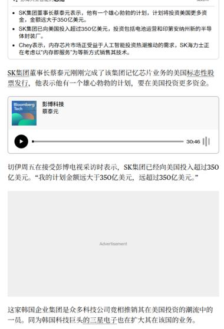
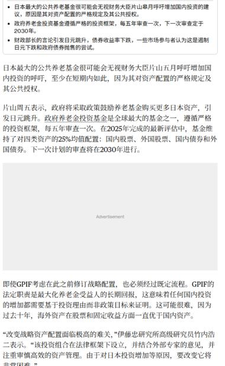
一句话核心
两条"资本流向"新闻：韩国 SK 集团把钱往美国搬（迎合特朗普），日本最大养老金 GPIF 在讨论是否把更多钱留在国内。
背景与关键数据
- SK 集团：董事长蔡泰源表示对美投资"远大于 350 亿美元"，投向电池运营和半导体工厂（新安州芯片厂）。这是继三星之后，又一家韩国科技巨头扩大在美投资。背后逻辑是特朗普对贸易顺差国施压——"你对美国有顺差，就把顺差投回美国来建厂"，以此换取关税/贸易上的缓和。
- GPIF（日本政府养老投资基金）：是全球最大的养老基金（管理规模超 250 万亿日元级别）。它有一个严格的资产配置框架，把钱大致均分到四类资产：国内股票、外国股票、国内债券、外国债券（各约 25%），每五年评估一次，下次评估定在 2030 年。现在有政界声音希望它增加"国内配置"，但基金自己认为海外收益率更高，改变战略配置面临法律和流程约束。
图片解读
- 图 1（Bloomberg 报道截图）：讲 SK 集团在美投资"远大于 350 亿美元"，是众多科技公司在美投资潮流中的一员。
- 图 2（GPIF 报道截图）：说明 GPIF 维持四类资产各 25% 的配置，下次审查 2030 年；过去十年海外资产（股票＋固定收益）回报优于国内资产，所以基金对"增配国内"持谨慎态度。
为什么重要 / 对市场和经济的含义
这是全球资本再配置的两个侧面。特朗普的策略是逼贸易顺差国（韩、日、台等）把顺差以"到美国建厂"的形式还回来——短期利好美国制造业投资和就业。而日本是美国国债最大的海外持有者，如果连养老金都开始讨论"把钱留在国内"，那对美债、美股的边际需求是个潜在利空信号（虽然 GPIF 短期不会大动）。Jason 想表达的是：资本流向正在被政治力量重塑。
延伸知识
经常账户与资本账户的恒等式：一个国家对外贸易顺差（经常账户盈余），必然对应等量的资本流出（买外国资产）。日本、韩国、中国长期对美顺差，赚到的美元很大一部分回流买了美债/美股——这就是所谓"美元循环"。特朗普想改变的是这个循环的形式：不要只买金融资产，而是来美国"建厂投实体"。理解这条线，就能看懂很多"某国宣布对美投资 XX 亿美元"的新闻本质。
帖 2 · 16:07 · #其他国家经济 — 日本机床订单创历史新高
帖子原文
日经：日本 6 月的机床订单额（速报值）同比增长 53％，达到 2035 亿日元，刷新历史最高纪录。其中海外订单额同比增长 56％……在中国，四轮车用途及数据中心相关机床等的需求增加……该公司在印度也获得了四轮车、摩托车用机床订单……在美国获得了火箭等航天相关领域及数据中心领域的订单，在欧洲获得了国防和能源相关领域的订单……大隈的半导体制造设备零部件用途机床订单表现强劲……芝浦机械的核电用途大型机床以及用于光通信透镜的超精密加工机床订单出现增加。#其他国家经济
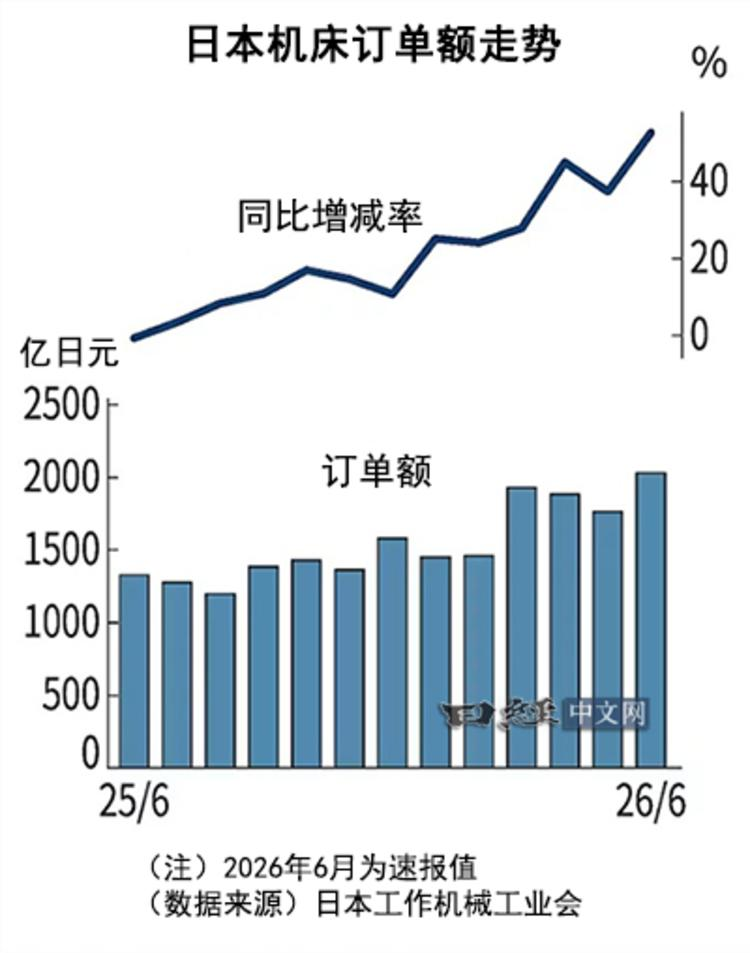
一句话核心
日本机床订单创历史新高（+53%），说明全球制造业的资本开支（capex）在扩张，热点是数据中心、汽车、航天、国防、半导体。
背景与关键数据
- 机床（工作机械）是"制造机器的机器"——生产汽车零件、飞机、芯片设备都要先有机床。它属于资本品，订单量是制造业投资意愿的领先指标（企业先下机床订单，才有后面的扩产）。
- 6 月订单 2035 亿日元，同比 +53%，海外 +56%，双双创纪录。需求来源很分散：中国（数据中心、汽车）、印度（汽车/摩托）、美国（火箭航天、数据中心）、欧洲（国防、能源）、日本国内（半导体设备、核电、光通信）。
图片解读
图（日经中文网《日本机床订单额走势》）：
- 上半部分折线是同比增减率（%），从 25/6 附近的接近 0，一路震荡上行到 26/6 的约 +50%——增速在加速。
- 下半部分柱状是订单额（亿日元），从约 1300 亿逐月抬升，到 26/6 冲到约 2035 亿，是图中最高的一根柱。
- 两图叠加传达的信号：不是"低基数造成的同比虚高"，而是绝对金额也创了新高，说明是真实的需求扩张。
为什么重要 / 对市场和经济的含义
机床订单是全球 capex 周期的领先风向标。这一轮拉动力量很清晰：AI 数据中心 + 国防军工 + 半导体设备。这利好整条资本品/自动化/半导体设备产业链。Jason 反复关注这类"上游资本品"数据，是因为它们比 GDP、PMI 更早、更真实地反映企业愿不愿意花钱扩产。
延伸知识
什么是"领先指标"：经济指标按时间分领先、同步、滞后三类。机床订单、PMI 新订单、建筑许可是领先（预示未来）；工业产出、GDP 是同步；失业率、CPI 往往滞后。跟读财经，学会区分你看到的数据是"预言未来"还是"确认过去"，判断价值完全不同。机床订单就是典型的领先指标——它告诉你 6–12 个月后制造业景气度大概什么样。
帖 3 · 15:54 · #金融 — 摩根斯坦利：中国居民去杠杆还要两年
帖子原文
摩根斯坦利：中国居民部门的去杠杆过程尚未结束，可能还要持续大约两年。我们估算居民去杠杆使年度居民支出少了约 4 万亿至 5 万亿元人民币。当前消费疲软，不只是收入信心问题，还与信贷收缩有关。 基建方面，2024 年，中国基础设施项目整体资产回报率 ROA 约为 1.30%，不能覆盖利息支出…… 另外制造业也在去杠杆，截至 2026 年 5 月，按制造业负债规模计算，85.1% 的工业行业，其资本开支增速低于 2024 年上半年…… 去杠杆也会让银行受益，中国高风险金融资产规模已经从 2017 年 62 万亿元、占全部金融资产 30.2% 下降到 2025 年 21 万亿元、占全部金融资产 4.9%。#金融
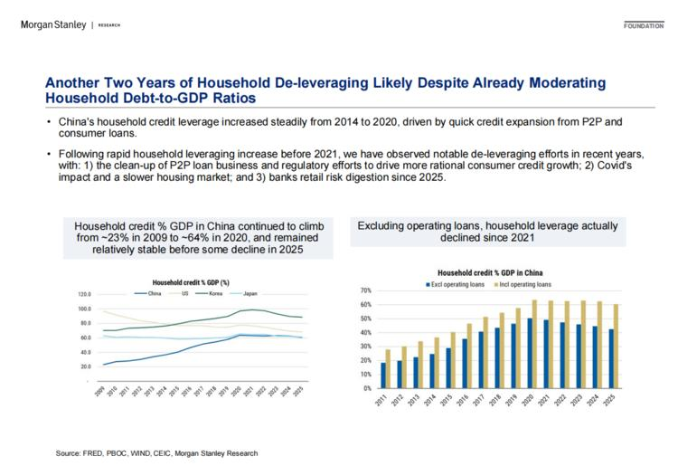
一句话核心
中国居民和制造业都在"去杠杆"（还债、少借钱），短期压制消费和投资，但长期改善金融系统的健康度。
背景与关键数据
- 去杠杆 = 降低债务/杠杆率（少借新债、多还旧债）。摩根斯坦利估算，居民去杠杆让每年居民支出少了 4–5 万亿元——钱拿去还房贷/存起来，而不是消费。所以消费疲软"不只是没信心，还因为信贷在收缩"。
- 基建 ROA 仅 1.30%：意思是基建项目每投 100 元一年只赚 1.3 元，连利息都覆盖不了，说明过去靠债务堆的基建投资回报已经很低。
- 制造业也在去杠杆：85.1% 的工业行业 capex 增速低于 2024 上半年——企业也在收缩投资、修复利润。
- 银行受益：高风险金融资产从 2017 年的 62 万亿（占金融资产 30.2%）降到 2025 年的 21 万亿（4.9%），系统性风险大幅下降。
图片解读
图（Morgan Stanley 幻灯片：《居民去杠杆可能还要两年》）：
- 左图：中国居民信贷/GDP 从 2009 年的约 23% 一路爬到 2020 年的约 64%，2025 年前保持稳定后开始回落。同时对比了美国、韩国、日本的曲线（中国爬升最陡）。
- 右图：剔除经营贷后，中国居民杠杆实际上从 2021 年就开始下降了（蓝柱 vs 米色柱的对比）。
- 数据来源：FRED、PBOC、WIND、CEIC。
为什么重要 / 对市场和经济的含义
去杠杆是一种慢变量——它像"资产负债表衰退"：大家忙着还债而不是花钱，导致需求长期偏弱、物价偏低（通缩压力）。对市场的含义是双面的：短期利空内需、消费、顺周期股（也压制奢侈品，见帖 7）；长期利好银行资产质量和金融稳定。Jason 强调"还要两年"，是提醒大家别期待中国消费很快 V 型反弹。
延伸知识
辜朝明的"资产负债表衰退"：日本经济学家辜朝明用这个概念解释日本"失去的三十年"——泡沫破裂后，企业和居民的资产（房子/股票）缩水但债务不变，于是所有人都优先还债而非借钱消费，即使利率降到零也没人借钱。结果是货币政策失灵、经济长期低迷。中国当前的居民/制造业去杠杆，很多人担心是同一剧本。理解这个概念，就能明白"为什么降息了大家还是不花钱"。
帖 4 · 15:46 · #金融 — 国盛：居民存款"搬家"，定存占比已达 75%
帖子原文
国盛：1-5 月居民存款搬家主要由于定期存款少增，但定期居民存款占比仍居高不下，5 月末居民定期存款占比已达到 75%，本质上反映了居民对未来收入的不确定性，预防性储蓄动机仍然强烈。 非银存款之所以显著抬升，背后是三条主线叠加：第一，资本市场交易活跃带动券商客户保证金增加（一季度约 +4900 亿元）；第二，低利率下存款替代需求强化，货基、债基、理财吸纳资金（2026 年 1-5 月货基净值 +约 1.2 万亿、债基 +约 7400 亿）；第三，保险"开门红"保费流入（一季度保费同比 +6.3%）。 总量层面，居民存款向非银存款搬家，本质更接近银行体系内部的负债结构重排，而不是银行体系总负债的系统性流失。2026 年 1-5 月，居民存款累计新增仅 5.63 万亿元，同比少增 2.67 万亿元…… 往后看，居民存款搬家趋势大概率延续，但节奏较上半年更温和，配置盘定价权提升……保险对超长债的定价权或明显提升。#金融
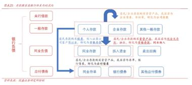
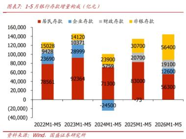
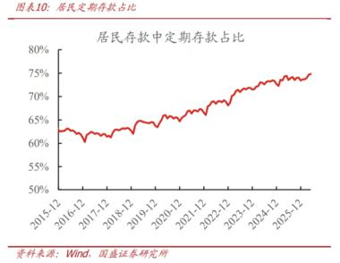
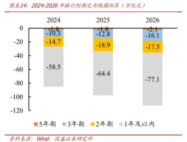
一句话核心
居民把定期存款转向理财/基金/保险（"存款搬家"），但钱没离开银行体系，只是在体系内换了个"位置"——这为股市和债市提供了增量资金。
背景与关键数据
- 存款搬家 = 居民把银行定期存款挪去买货基、债基、理财、保险。5 月末居民定期存款占比高达 75%，反映强烈的"预防性储蓄"（对未来收入没把握，先存钱防身）。
- 非银存款暴增的三条主线：券商保证金（一季度 +4900 亿）、存款替代（货基 +1.2 万亿、债基 +7400 亿）、保险开门红（保费同比 +6.3%）。
- 居民存款 1-5 月仅新增 5.63 万亿，同比少增 2.67 万亿——少增的部分就是"搬"去了非银渠道。
- 关键判断：这是银行体系内部的负债结构重排，不是资金流失，因为资管产品最终又买回了同业存单、企业存款等，钱还在体系里转。
图片解读
- 图 1（图表 A21 · 存款流向流程图）：画出"居民存款 → 非银存款"的资金路径——个人存款先流向同业存款，再转化为个人入资/银行理财/卖出回购等。帮你直观理解"搬家"到底搬去哪。
- 图 2（图表 7 · 1-5 月银行存款增量构成，亿元）：堆叠柱状对比 2022–2026 各年 1-5 月。红色（居民存款）从 2022 的 78561 一路降到 2026 的 56300；黄色（非银存款）从 15028 升到 56400——一降一升，"搬家"一目了然。（注：2024 年企业存款是 -24500 的负值。）
- 图 3（图表 10 · 居民定期存款占比）：一条从 2015 年约 62% 稳步上行到 2025 年底约 75% 的红线——储蓄越来越"定期化"，反映避险情绪。
- 图 4（图表 14 · 2024-2026 年到期定存规模测算，万亿元）：向下的堆叠柱，按期限（5 年/3 年/2 年/1 年及以内）。到期规模逐年放大：2024 约 -85、2025 约 -97、2026 约 -113（其中 1 年及以内 -77.1）——意味着大量定存陆续到期、需要"再配置"。
为什么重要 / 对市场和经济的含义
低利率环境下，"存款搬家"是资金进入资本市场的燃料——利好债市（配置盘）、股市、券商、资管、保险。但硬币的另一面是：高企的定存占比和预防性储蓄，说明实体投资和消费意愿弱。海量到期定存（2026 年 -77 万亿在 1 年内到期）会持续制造"再配置需求"，压低无风险利率、推高风险资产和长债价格。Jason 关注这条线，是在提示"钱多但没地方去"的资产荒逻辑。
延伸知识
金融脱媒（disintermediation）与资产荒：当存款利率太低，居民不再把钱简单存银行，而是绕过银行"中介"直接/间接买入基金、债券、保险，这叫金融脱媒。结果是大量资金追逐有限的优质资产，压低收益率——就是"资产荒"。这解释了为什么在经济偏弱、存款利率下行时，债券和高股息股票反而能走牛：不是基本面多好，而是钱太多、可选资产太少。
帖 5 · 15:32 · #其他国家经济 — 伊朗霍尔木兹 / 俄乌 / 油市
帖子原文
zerohedge：美国要求伊朗公开声明，霍尔木兹海峡所有航道均对航运开放，且不会攻击过境的民用船只。俄罗斯警告北约在引领世界走向灾难性对抗前"停下来思考"。#其他国家经济 ....向俄罗斯传递"不要动核武器想法"的信息，并将这一叙事告知了欧盟谈判者。
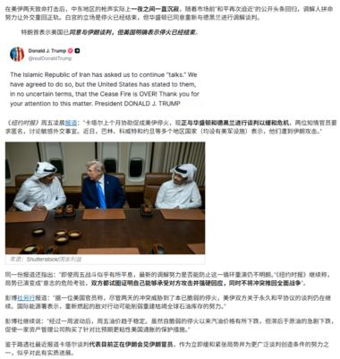
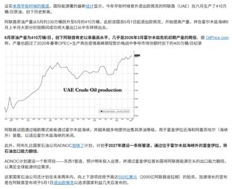
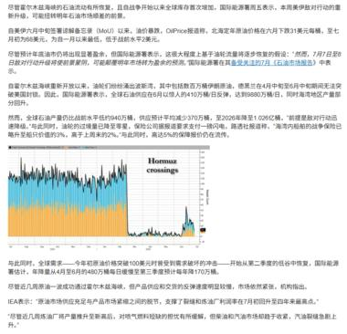
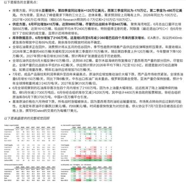
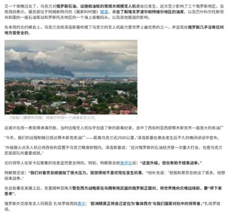
一句话核心
一组地缘风险新闻（伊朗-霍尔木兹通航、俄乌互袭能源设施、俄警告北约）与全球油市的供需数据交织在一起。
背景与关键数据
- 霍尔木兹海峡是全球约 五分之一原油与 LNG 的必经水道（波斯湾出口的咽喉）。美国要求伊朗公开承诺"所有航道对航运开放、不袭击民用船只"——这是在给市场吃定心丸，降低"航道被封"的尾部风险。
- 俄乌能源战：乌克兰用无人机袭击俄罗斯炼油厂（图 5 的起火画面），俄罗斯则警告北约"停下来思考"，并释放核信号。能源基础设施成为双方互相打击的目标。
- 供给面：阿联酋（UAE）6 月原油产量约 741 万桶/日，超出 OPEC+ 配额——供给其实是宽松的。
图片解读
- 图 1：特朗普在 Truth Social 上就美伊关系发声，配一张他与顾问开会的照片。中文旁白说明美伊仍在沟通、停火大体维持。
- 图 2（UAE 原油产量图）：一条上行的时间序列，显示 UAE 产量升破 OPEC+ 配额，供给端偏松。数据来源 OilPrice.com。
- 图 3（Hormuz crossings 霍尔木兹通行量图）：叠加的柱状/面积图，显示过境油轮数量一度骤降后又回升——直观反映紧张时期航运受扰、缓和后恢复。
- 图 4：油市"报告主要观点"的要点＋供需平衡数据表（库存、Q2/Q3 预测等）。
- 图 5：俄罗斯炼油厂被无人机击中、城市上空浓烟滚滚的实拍图。
为什么重要 / 对市场和经济的含义
油价此刻是两股力量的拔河：地缘风险溢价（霍尔木兹、俄乌）往上顶，供给过剩（OPEC+/UAE 超产）往下压。谁占上风决定油价方向，而油价又直接影响通胀预期、能源股、航空成本。霍尔木兹属于典型的"低概率、高冲击"尾部风险；俄罗斯炼油产能受损则会扰动成品油（柴油/汽油）供给。Jason 把地缘新闻和油市数据放一起，是在提醒"别只看标题，要看它落到油价和通胀上的实际权重"。
延伸知识
咽喉点（chokepoint）与风险溢价：全球能源贸易高度依赖几个海上"咽喉点"——霍尔木兹、马六甲、苏伊士、巴拿马运河。任何一个被威胁，油价里就会加进"风险溢价"（为潜在中断预付的保险费）。理解这个概念，就能明白为什么"没真的封航、只是威胁"油价也会跳——市场为概率定价，而非只为已发生的事实定价。
帖 6 · 15:26 · #经济数据 — 关税重压：全球车企单车利润全面恶化
帖子原文
日经：全球 7 家主要汽车厂商 2025 年度的每辆车利润比 2024 年度全部出现恶化。主要原因是美国政府启动的汽车关税。在丰田 2025 财年（截至 2026 年 3 月）的合并业绩中，关税成本为 1.38 万亿日元，成为营业利润下降的主要原因。德国大众和美国通用的关税成本也挤压了利润。第 3 位是中国的比亚迪（BYD）。中国政府原本在 2025 年对新能源汽车全额免征购置税，但从 2026 年 1 月开始从全额减免变成了减半。比亚迪 2026 年 1～3 月净利润减少 55%，苦战仍在持续。#经济数据
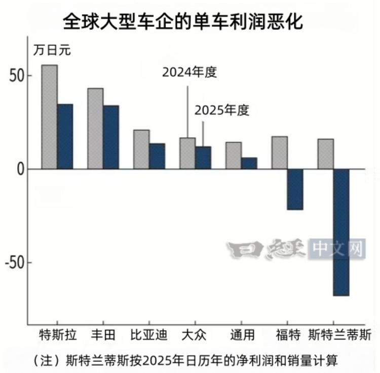
一句话核心
美国汽车关税 + 中国 EV 补贴退坡，让全球 7 大车企 2025 年的"单车利润"全线下滑，福特和 Stellantis 甚至转为亏损。
背景与关键数据
- 单车利润 = 每卖一辆车赚多少净利，是衡量车企盈利质量的核心指标。
- 关税冲击：丰田一家的关税成本就高达 1.38 万亿日元，是其营业利润下滑的主因；大众、通用同样被挤压。
- 补贴退坡：比亚迪单车利润跌到全球第 3 差，因为中国的新能源购置税优惠从 2025 年的"全额免征"变成 2026 年 1 月起的"减半"，直接抬高购车成本、压缩需求。比亚迪 2026 Q1 净利润 -55%。
图片解读
图（日经中文网《全球大型车企的单车利润恶化》，单位万日元）：灰柱=2024 年度，蓝柱=2025 年度，几乎所有车企蓝柱都明显矮于灰柱：
- 特斯拉 约 55 → 35
- 丰田 约 43 → 33
- 比亚迪 约 20 → 13
- 大众 约 16 → 11
- 通用 约 14 → 6
- 福特 约 17 → -22（转亏）
- 斯特兰蒂斯 约 15 → -68（巨亏）
福特、Stellantis 的蓝柱直接跌破零轴，说明这两家 2025 年单车已经亏钱。
为什么重要 / 对市场和经济的含义
关税本质是对制造业利润征的一道税——从这张图能清楚看到它怎么一刀切进车企利润。汽车业是就业和产业链大户，利润塌方会传导到资本开支、供应商、股价。比亚迪的例子则揭示了中国 EV"高增长"背后的政策依赖：补贴一退坡，利润立刻承压。Jason 用这张图说明"关税战没有赢家"，以及新能源车"补贴驱动"模式的脆弱性。
延伸知识
关税的成本传导——到底谁付关税？ 教科书里关税由进口方缴纳，但实际由谁"承担"取决于议价能力：车企可以选择①自己吞（利润下降，就是这张图）、②转嫁给消费者（涨价，可能丢销量）、③压供应商降价。这张图显示，2025 年车企主要选择了①自己吞——所以利润恶化。理解"关税归宿（tax incidence）"，就能判断一项关税最终打击的是企业利润、消费者钱包还是上游供应链。
帖 7 · 15:23 · #房价 — 摩根斯坦利：中国房价 6 月继续下跌
帖子原文
摩根斯坦利：中国房地产仍然没有止跌，这将继续影响中国消费者购买奢侈品的能力和意愿。中国消费者贡献了欧洲奢侈品行业超过 30% 的消费……房地产市场 6 月份继续恶化，三季度可能比二季度更差。我们预计北京、上海等个别一线城市仍可能小幅上涨，但全国平均房价仍将继续下降。他们跟踪的 85 个城市，截至 2026 年 6 月相对于 2021 年 6 月高点二手房价格累计已经下跌 38%。85 个城市中 94% 的城市 6 月份房价继续下跌。一线城市 6 月份仅下降 0.1%，显现抗跌属性。我们跟踪 45 个城市发现 6 月份中介门店到访人数环比下降 16%……截至 6 月底约 45% 的样本城市挂牌数量仍高于 2025 年底，其中 35% 的城市挂牌库存创历史最高。#房价
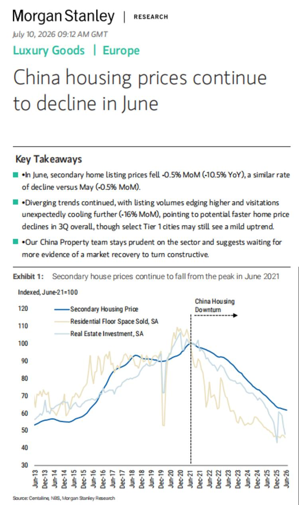
一句话核心
中国房价 6 月还在跌（-0.5% 环比 / -10.5% 同比），二手房自 2021 高点已累计 -38%，并通过"财富效应"拖累奢侈品消费。
背景与关键数据
- 房价数据：6 月二手房挂牌价环比 -0.5%、同比 -10.5%，与 5 月跌幅相当；85 城中 94% 仍在跌；一线仅 -0.1%（相对抗跌）；二手房自 2021 年 6 月高点累计 -38%。
- 领先信号：45 城中介门店到访人数 6 月环比 -16%——看房的人在减少，往往预示未来价格进一步下跌。
- 库存压力：约 45% 样本城市挂牌量高于 2025 年底，35% 城市挂牌库存创历史新高——供给堰塞、去化困难。
- 为什么从奢侈品角度谈：这是摩根斯坦利欧洲奢侈品团队的报告。中国消费者贡献欧洲奢侈品 >30% 的消费，房价→家庭财富→奢侈品需求，传导链清晰。
图片解读
图（Morgan Stanley，2026 年 7 月 10 日，Luxury Goods · Europe，《中国房价 6 月继续下跌》Exhibit 1）：
- 深蓝线=二手房价指数（以 2021 年 6 月 = 100），从 2013 年的约 53 一路涨到 2021 年 6 月的 100 顶点，之后进入"China Housing Downturn"（图中虚线标注），一路跌到 2026 年 6 月的约 62——正好对应正文说的累计 -38%。
- 另外两条浅色线是住宅销售面积（SA）和房地产投资（SA），跌幅比房价更深、更早见顶。
- 数据来源：Centaline（中原地产）、NBS（国家统计局）、Morgan Stanley。
为什么重要 / 对市场和经济的含义
房价是中国居民财富效应的核心（房产占家庭资产大头）。房价持续跌 → 家庭觉得变穷 → 捂紧钱包 → 消费和奢侈品需求承压。这条线和帖 3（居民去杠杆）、帖 4（预防性储蓄）是同一个故事的三个侧面：资产缩水 + 收入不确定 → 大家还债、存钱、不消费。库存创新高说明筑底还早；而"看房人数"这个领先指标继续下滑，意味着三季度可能更差。对奢侈品股、地产链、消费股都是压制信号。
延伸知识
财富效应（wealth effect）：家庭消费不只取决于当期收入，还取决于"感觉自己有多富有"——主要是房子和股票的市值。房价涨，人们觉得富了、敢花钱（正财富效应）；房价跌，反过来（负财富效应）。中国家庭约 60–70% 的财富压在房产上，所以房价下跌的负财富效应特别强。这也是为什么"稳楼市"在政策里权重那么高——它不只是地产问题，更是整个消费和内需的地基。搭配帖 3 的"资产负债表衰退"一起看，就是一套完整的中国内需分析框架。
今日全图索引
| 帖号 | 时间 | 主题 | 标签 | 图片文件 |
|---|---|---|---|---|
| 1 | 16:23 | SK 加码投美 & 日本养老金是否增配国内 | #其他国家经济 | post1_img1.jpg（SK 投美）、post1_img2.jpg（GPIF 养老金） |
| 2 | 16:07 | 日本机床订单创历史新高（+53%） | #其他国家经济 | post2_img1.jpg（机床订单额走势图） |
| 3 | 15:54 | 中国居民去杠杆还要两年（摩根斯坦利） | #金融 | post3_img1.jpg（居民信贷/GDP 曲线） |
| 4 | 15:46 | 居民存款"搬家"，定存占比 75%（国盛） | #金融 | post4_img1.jpg（流向图）、post4_img2.jpg（增量构成）、post4_img3.jpg（定存占比）、post4_img4.jpg（到期定存测算） |
| 5 | 15:32 | 伊朗霍尔木兹 / 俄乌 / 油市 | #其他国家经济 | post5_img1.jpg（特朗普-伊朗）、post5_img2.jpg（UAE 产量）、post5_img3.jpg（霍尔木兹通行量）、post5_img4.jpg（油市要点表）、post5_img5.jpg（俄炼油厂起火） |
| 6 | 15:26 | 关税重压，全球车企单车利润恶化 | #经济数据 | post6_img1.jpg（单车利润对比图） |
| 7 | 15:23 | 中国房价 6 月继续下跌，累计 -38%（摩根斯坦利） | #房价 | post7_img1.jpg（二手房价指数图） |
本报告由 trading_analysis 项目每日自动生成，内容基于知识星球「南半球聊财经」星主 Jason 不跪 2026-07-10 当日公开发帖。全部图片为帖内原图。仅供个人学习参考，不构成投资建议。